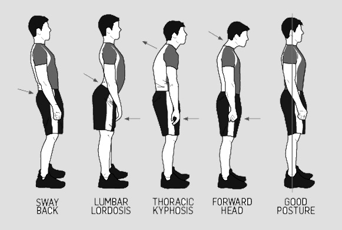

Physical fitness refers to the overall health and ability of an individual to perform physical activities.
It includes components like cardiovascular endurance, muscular strength, muscular endurance, flexibility, and body composition.
Achieving physical fitness involves regular exercise, a balanced diet, adequate rest, and a healthy lifestyle.
Regular physical activity has various health benefits, contributing to cardiovascular health, mood improvement, better sleep, and a reduced risk of chronic diseases.
Posture
Maintaining good posture is crucial in bodymaxxing. Proper posture not only enhances the overall appearance but also contributes to a confident and attractive demeanor.

Diet
A diet for bodymaxxing typically focuses on optimizing physical appearance, including muscle development and aesthetics.
Keep in mind that individual nutritional needs can vary, and it's essential to tailor your diet to your specific goals, preferences, and any underlying health conditions.